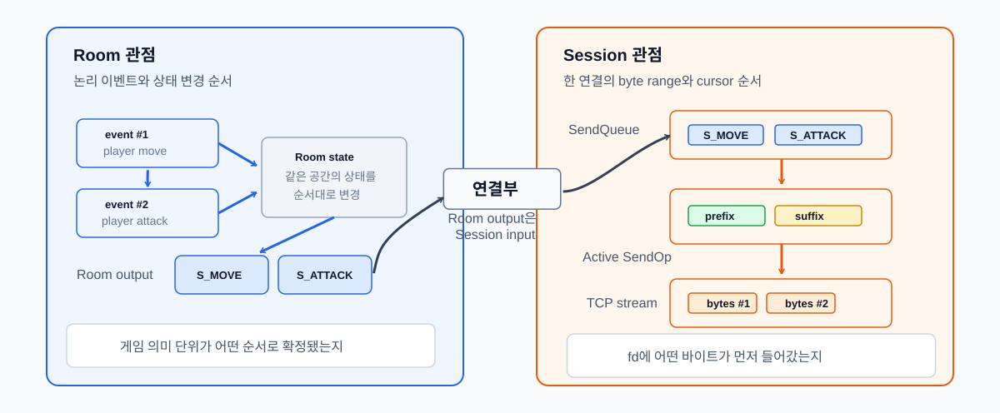

Room과 Session 직렬화
1 Room과 Session 직렬화
게임 서버에서는 실시간으로 상태가 변하고, 여러 플레이어가 그 상태를 공유합니다. 하지만 각 플레이어의 입력은 서로 다른 네트워크 레이턴시를 거쳐 서버에 도착하므로, 서버는 도착한 입력들을 어떤 순서로 처리할지 결정해야 합니다.
게임 서버에서 Room은 같은 공간, 채널, 전투 인스턴스처럼 함께 상태를 공유하는 최소 단위입니다. 플레이어 입장, 퇴장, 이동, 공격, 포탈 이동, 브로드캐스트 대상 결정처럼 “누가 같은 공간에 있고, 어떤 순서로 상태가 바뀌었는지”를 판단해야 하는 작업은 Room의 상태를 기준으로 처리됩니다.
Room은 다음 정보를 하나의 상태 단위로 묶습니다.
| 항목 | 의미 |
|---|---|
| 멤버 목록 | 현재 Room에 들어와 있는 플레이어와 세션 |
| 도메인 상태 | 위치, 이동, 전투 상태처럼 Room 안에서 공유되는 값 |
| 입력 작업 | 입장, 퇴장, 이동, 공격, 포탈 이동처럼 순서가 필요한 요청 |
| 출력 결정 | 어떤 플레이어에게 어떤 패킷을 보낼지에 대한 브로드캐스트 결정 |
Room이 직접 관리하는 것은 Room 내부 상태입니다. 예를 들면 현재 Room에 들어온 플레이어 목록, Room 안에서 처리할 작업 순서, 그리고 어떤 세션에게 어떤 패킷을 보내야 하는지에 대한 결정, 즉 “게임 상태를 어떤 순서로 바꿀지”를 정해야 합니다.
Session은 하나의 클라이언트 연결을 나타냅니다. Session의 책임은 Room 상태를 판단하는 것이 아니라, 해당 연결에 대해 패킷 바이트를 어떤 순서로 쓸지 보장하는 것입니다.
Room이 브로드캐스트 대상을 결정하더라도, 실제 Send()가 어느 스레드에서 어떤 순서로 실행될지는 별도의 문제입니다. 같은 Session에는 Room에서 발생한 이동/전투 패킷뿐 아니라 채팅, 인벤토리, 로그인, 시스템 알림처럼 다른 경로의 패킷도 들어올 수 있습니다.
따라서 Room과 Session은 서로 다른 순서를 보장합니다.
| 단위 | 보장하는 순서 |
|---|---|
| Room | 공유 게임 상태의 변경 순서 |
| Session | 하나의 TCP 연결에 쓰이는 바이트 순서 |
Room은 “게임 상태를 순서대로 바꾸는 곳”이고, Session은 “한 연결에 바이트를 순서대로 쓰는 곳”입니다. Room의 브로드캐스트 결과는 Session 송신 큐에 들어가는 입력일 뿐이며, 실제 커널 송신 제출과 부분 송신 복구는 Session의 책임입니다.
1.1 직렬화 경계가 필요한 이유
iouring-runtime의 게임 서버는 여러 IoWorker가 각자의 io_uring 루프를 가지고 병렬로 실행됩니다. 이 구조에서는 같은 Room이나 같은 Session에 대한 요청이 서로 다른 스레드에서 동시에 발생할 수 있습니다.
단순하게 모든 상태를 뮤텍스로 보호할 수도 있습니다. 하지만 그렇게 하면 게임 로직, 소켓 I/O, Room 브로드캐스트, Session 송신 경로 전체에 락이 퍼집니다. 락 범위가 넓어질수록 어떤 상태를 누가 소유하는지 불명확해지고, 교착이나 락 순서 문제도 생기기 쉬웠습니다.
여기에서는 전역 락 대신 상태의 소유자를 명확히 나누고, 스레드 간 작업을 해당 상태의 소유자 실행 context로 모으는 방식을 선택했습니다.
| 경계 | 소유자 | 통과하는 데이터 | 보장하는 것 |
|---|---|---|---|
Room JobQueue |
Room을 실행 중인 워커 | join, leave, move, attack, portal, 브로드캐스트 결정 | Room 상태는 한 번에 하나의 job만 변경 |
WorkerOutbox |
대상 IoWorker |
세션별 Room 출력 | 같은 세션으로 가는 Room 출력은 FIFO로 비워짐 |
Session owner ring |
해당 세션의 IoRing 스레드 |
Send(), send_queue_, SendOp |
한 연결의 쓰기 상태는 소유자 ring에서만 변경 |
Room의 JobQueue는 여러 세션에서 들어온 요청은 큐에 쌓이지만, Room owner는 그 큐를 한 번에 하나씩만 비우며 Room 상태를 변경합니다. Room이 만든 출력은 바로 세션에 쓰지 않고 WorkerOutbox라는 출력 메일박스에 세션별로 들어갑니다. 마지막으로 각 세션 owner ring에서 그 큐를 Session::SendQueue로 옮기기 때문에, Room 결정 순서가 같은 세션의 송신 큐 삽입 순서로 이어집니다.

*** ### Room 출력 순서 보장Room이 만든 패킷을 곧바로 각 Session 소유자 ring 으로 흩어 보내면, 클라이언트가 보는 순서가 Room의 처리 순서와 달라질 수 있습니다.
기존 RunOnRing() 방식은 대상 ring이 현재 ring이면 즉시 실행하고, 다른 ring이면 비동기로 전달했습니다. 이 차이 때문에 Room 내부의 논리 순서와 실제 Session::SendQueue 삽입 순서가 달라질 수 있습니다.
예를 들어 Room이 같은 세션에 대해 Packet #1, Packet #2를 순서대로 만들었다고 하더라도, 하나는 현재 ring에서 즉시 Send()되고 다른 하나는 다른 ring으로 비동기 전달되면 실제 Session 송신 큐에 들어가는 순서가 Room의 출력 순서와 달라질 수 있습니다.
Room은 순서대로 처리했지만, 출력 경로가 즉시 실행 경로와 비동기 실행 경로로 갈라지면서 실제 송신 큐 삽입 순서가 뒤집힐 수 있었습니다.
이를 해결하기 위해 Room에서 나온 출력은 세션에 바로 Send()하지 않고, 대상 쓰레드의 발신 메일박스인 WorkerOutbox에 먼저 넣습니다.
Room::SendTo(), BroadcastAll(), BroadcastExcept()는 모두 worker->EnqueueOutbound(...)를 호출합니다.
WorkerOutbox는 세션 id별 큐를 가지고, IoWorker::Run()의 drain 단계에서 소유 스레드가 직접 비웁니다. 즉시 Send()하지 않고 반드시 outbox를 거치기 때문에, 같은 세션으로 가는 Room 출력은 하나의 FIFO 경로를 통과합니다.
서로 다른 세션으로 가는 메시지는 각 세션 큐에서 독립적으로 처리됩니다. 여기서 보장하는 것은 Room이 만든 출력이 같은 대상 Session으로 전달될 때, 그 Room 출력의 상대 순서가 유지된다는 것입니다.
각 Session은 자신을 소유한 IoWorker 스레드가 정해져 있습니다. 예를 들어 1번 세션은 1번 스레드, 2번 세션은 2번 스레드, 3번 세션은 3번 스레드가 소유합니다. Room은 여러 Session에서 들어온 입력을 하나의 Room 입력 큐로 모아 처리하지만, Room이 만든 출력은 다시 각 Session을 소유한 스레드의 outbox[session]으로 돌아갑니다.
따라서 같은 Session의 출력은 항상 같은 소유 스레드 큐를 통과합니다. Room이 전체 입력을 #1 -> #2 -> #3 -> #4 -> #5 -> #6 순서로 처리하더라도, 출력 단계에서는 대상 Session별 큐로 다시 나뉩니다.
| 대상 Session | 소유 스레드 | 유지되는 출력 순서 |
|---|---|---|
| Session 1 | Thread 1 | #1 -> #4 |
| Session 2 | Thread 2 | #2 -> #5 |
| Session 3 | Thread 3 | #3 -> #6 |
Room이 ChatMessage #1, ChatMessage #2를 순서대로 처리하면 Room JobQueue는 두 메시지의 브로드캐스트 결정 순서를 보장합니다. 그 결과는 대상 워커의 outbox[session]에 같은 순서로 들어가고, DrainOutbox()가 이를 Session::SendQueue로 순서대로 밀어 넣습니다. 마지막으로 실제 TCP 바이트 스트림의 순서는 Session의 SendQueue와 활성 SendOp이 유지합니다.
전체 흐름은 다음과 같습니다.
Room JobQueue
-> Room 상태 변경
-> 브로드캐스트 대상 결정
-> WorkerOutbox[session] enqueue
-> IoWorker::DrainOutbox()
-> Session::SendQueue enqueue
-> active SendOp
-> io_uring send이 경로를 통해 Room의 상태 변경 순서, Room 출력의 세션별 전달 순서, 그리고 Session의 실제 송신 바이트 순서가 각각의 소유자 실행 문맥에서 분리되어 보장됩니다.
핵심은 Room의 논리 순서와 Session의 실제 송신 순서를 하나의 락으로 묶지 않았다는 점입니다. Room JobQueue는 Room 상태 변경과 브로드캐스트 결정을 한 번에 하나씩 처리하고, WorkerOutbox는 Room 출력이 대상 워커로 이동할 때 세션별 FIFO를 유지하며, Session owner ring은 같은 세션의 SendQueue 삽입과 SendOp 진행을 한 실행 문맥에서 처리합니다.